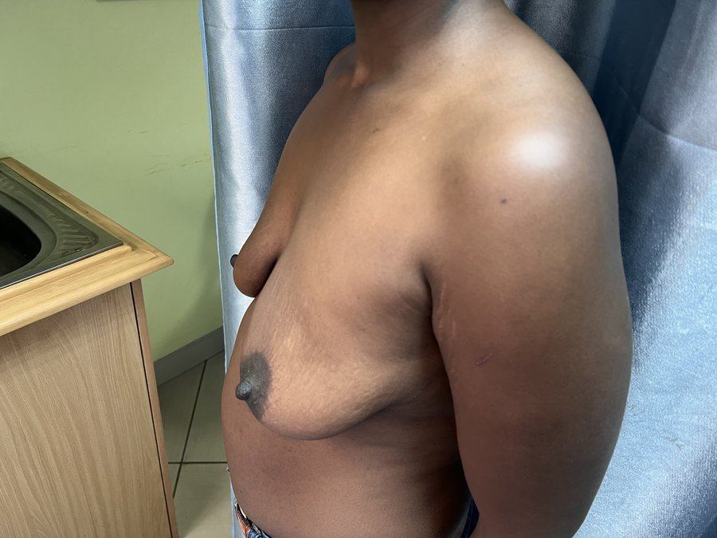
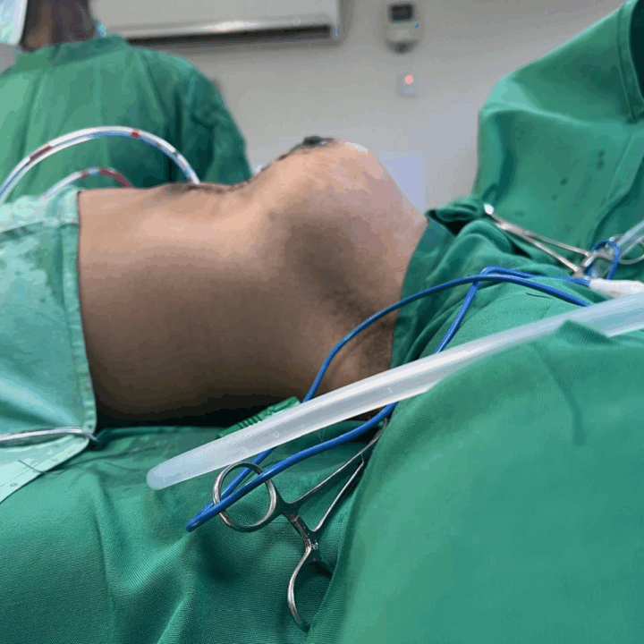
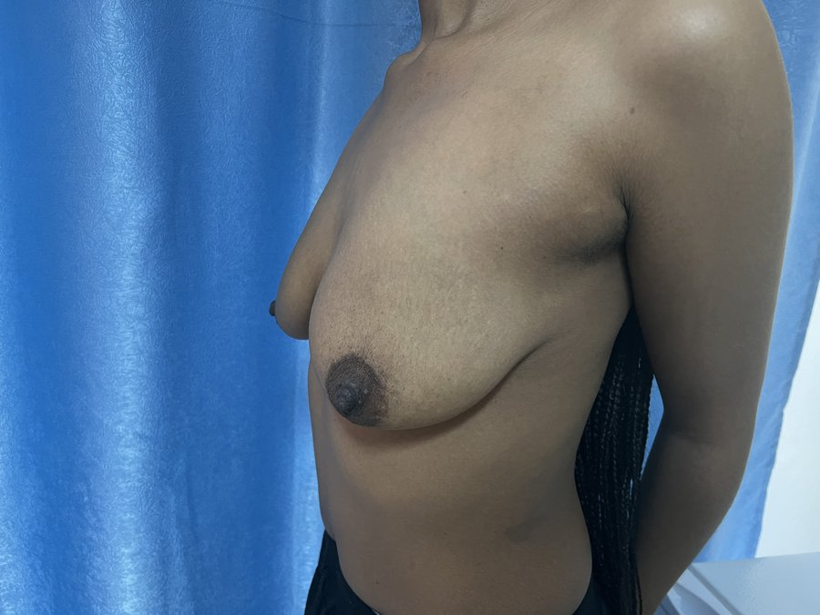

Achieve lasting relief from discomfort and a beautifully proportioned silhouette with surgical breast reduction by Dr. Matwa Christopher.
What It Is
Reduction mammoplasty is a surgical procedure that removes excess breast tissue, fat, and skin to achieve a breast size more in proportion with the body. For many women, overly large breasts are not just an aesthetic concern - they cause significant physical discomfort, including chronic back, neck, and shoulder pain, skin irritation beneath the breast fold, postural problems, and restriction in physical activity.
Women who struggle to find clothing that fits well, experience persistent rashes or infections beneath the breast, or feel unable to exercise comfortably are ideal candidates for reduction mammoplasty. The procedure offers both functional and aesthetic benefits, making it one of the most life-improving surgeries available.
Dr. Matwa Christopher customises the incision pattern based on each patient's breast size, shape, and anatomy to achieve a natural, lifted result with the least visible scarring possible. A thorough consultation is conducted to discuss your goals, medical history, and what you can realistically expect from the outcome.
Schedule Your Consultation
Why Choose This
Excess breast weight places chronic strain on the spine and neck. Reduction surgery immediately removes this load, providing lasting relief from pain that many patients have endured for years.
Heavy breasts pull the shoulders forward, causing a characteristic rounded posture. After reduction, patients frequently report a natural improvement in posture and shoulder alignment.
Finding well-fitting clothing is a daily challenge for women with disproportionately large breasts. Breast reduction opens up a wider range of comfortable, well-fitting clothing options.
Skin rashes, moisture-related infections, and persistent irritation beneath large breasts resolve almost entirely following reduction surgery, improving day-to-day comfort significantly.
Achieving a breast size in harmony with the rest of the body creates a more balanced, proportionate silhouette - improving both confidence and the way clothes fall on the body.
Many patients find that exercise, sport, and even daily movement become significantly easier and more enjoyable after reduction - enabling a more active and healthier lifestyle.
How It Works
Dr. Matwa conducts a thorough consultation to understand your symptoms, goals, and physical anatomy. Breast measurements, weight, and skin quality are assessed to determine the most appropriate surgical technique. Blood tests and general health screening are completed before your procedure is scheduled.
The procedure is performed under general anaesthesia. Before you go into theatre, Dr. Matwa marks the incision lines and new nipple position while you are standing, ensuring accurate placement based on your unique anatomy. The most common incision patterns are the anchor (inverted-T) or vertical (lollipop) approach, depending on the degree of reduction required.
Excess breast tissue, fat, and skin are carefully removed through the marked incisions. The nipple-areola complex is repositioned to a natural, higher position. The remaining breast tissue is reshaped and lifted to create a rounder, more youthful breast contour. The procedure typically takes three to four hours depending on the amount of tissue being reduced.
Incisions are closed with layered sutures and the area is covered with sterile dressings and a supportive surgical bra. Drain tubes may be placed temporarily to prevent fluid accumulation. Most patients spend one night in the facility before being discharged with a clear post-operative care plan and scheduled follow-up appointments.

Patient Results
Representative results from breast procedures performed at Truffel Healthcare Kilimani by Dr. Matwa Christopher.

Patient results vary. Images shared with patient consent. Results shown are representative of outcomes achievable under expert care.
What to Expect
Pain, swelling, and bruising are expected and managed with prescribed medication. You will be in a supportive surgical bra and movement should be kept minimal. A responsible adult should be with you during this initial period. Any drain tubes will be assessed at your first follow-up.
Swelling and discomfort reduce noticeably. Stitches or surgical strips are checked at your follow-up appointment. Short, gentle walks are recommended to aid circulation. Avoid stretching, reaching overhead, or any activity that pulls on the incision sites. Sleep on your back in an elevated position.
Most patients can return to sedentary work by the third or fourth week. Driving may resume once you are no longer taking prescription pain relief and can react comfortably. Continue wearing the surgical bra as instructed and avoid underwire bras until cleared by Dr. Matwa.
By months two to three, swelling has fully resolved and the breasts have settled into their final shape. Scars will continue to mature and fade over the following year. Exercise and physical activity can resume fully. Most patients report a significant improvement in comfort, posture, and quality of life at this stage.
Common Questions
Relief from years of discomfort is possible. Book a private consultation with Dr. Matwa Christopher at Truffel Healthcare Kilimani and take the first step towards a lighter, more comfortable you.
We are bringing world-class reconstructive care to Truffel Healthcare Kilimani. Stay tuned for updates.
Get notified →